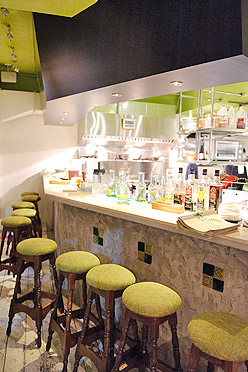

關於本餐廳
廣受饕客們喜愛的PengiunTree，在東區成立第三間分店！延續整系列輕鬆愉快的美式用餐環境，「企鵝樹家族」更將招牌色系''蘋果綠''置入店內，並增加花草植物的加持與古董裝飾的襯托，加上一樓設計的落地門窗與庭院空間的視覺呈現，無論是清晨亦或是午後，當陽光煦煦灑入，這兒就是品味美食享受人生的舒活國度。
天花板以淡綠色作為主色調，搭配實木座椅的擺設，夏日的午後，陽光恣意輕灑，陽光折射的自然採光，點亮一樓的每個角落。一本書、一杯咖啡、一份輕食餐點，有如在綠地上享受漫活的步調。輕靠在木質桌椅旁的我們，更猶如童話故事中，於樹下野餐的樂活享受。
「企鵝樹家族」以歐風樂活的角度置入於美式餐點之中，帶給饕客們一個不一樣的輕食養身主義。店長John於開業前，在以色列考察一個月之久，在那發現了許多不同的歐系美食，將道地口味平行輸入完整保留，要給喜愛嘗鮮的饕客們，獨特的賞味期限。

「企鵝樹家族」不同於之前THE DINNER的美式餐點，追求少油少鹽少油脂、無油炸的輕食養身主義，帶領饕客尋找健康的美食泉源。店內提供多樣化的沙拉組合，份量加倍、能量加分，讓女性顧客，能享用低脂高纖且有飽足感的夏日餐點。
為了讓輕食餐點能更加多元化，麵包類特別提供裸麥、黑麥麵包的健康選擇，且新增5～6款三明治餐點與店內獨家的法式捲餅、法式吐司。保留樂子最原始的美味並開發樂子以外的獨家餐點，給老顧客們與喜愛這份森林系草本質地的朋友，更多樣的選擇。
推開「企鵝樹家族」大門，猶如打開神秘的寶盒，所有秘密呼之而出。而潛伏「企鵝樹家族」盒內的秘密，就是這偌大的包場場地。空間寬敞，無論是各種形式的發表會，或是家族聚餐、朋友聚會、公司尾牙、慶功宴、同學會、生日party…等，都很適合。每每到5～9月的送舊迎新季，正是校園活動盛行之時，隨著學長姊們的畢業，對於良師的感謝，以及歡送新生的到來，各式各樣的迎新晚會、社團活動、謝師宴與送舊晚會都可以來到「企鵝樹家族」舉辦。而「企鵝樹家族」利用鋼琴打造出藝術氣息空間，就算是來場小型的音樂發表會也沒問題。
另有吃喝到飽專案~請點選最新消息，即有吃喝到飽專案詳細介紹。
在消費貴的嚇人的東區內，老闆勇敢的設置了一個空間，只供包場的人使用，這是多大的勇氣呀！問到他為何要這樣做的時候，老闆則是笑笑地說：「我以前是個節目製作，當初每天都陪老闆拜訪客戶，到了好多私人招待所，但每個私人招待所的費用都所費不資，因此我想要設立一個『全民私人招待所』，以平實的價格讓一般的人都可以享受到包場party歡樂的氛圍。」因為這個理念，讓「企鵝樹家族」就此誕生。
「企鵝樹家族」就像一個寶盒，從一看到它就讓您驚艷，慢慢的走進店內，更是讓您發出一連串的訝異聲，快來打個「企鵝樹家族」吧！讓它帶給你無限的驚奇與歡樂。